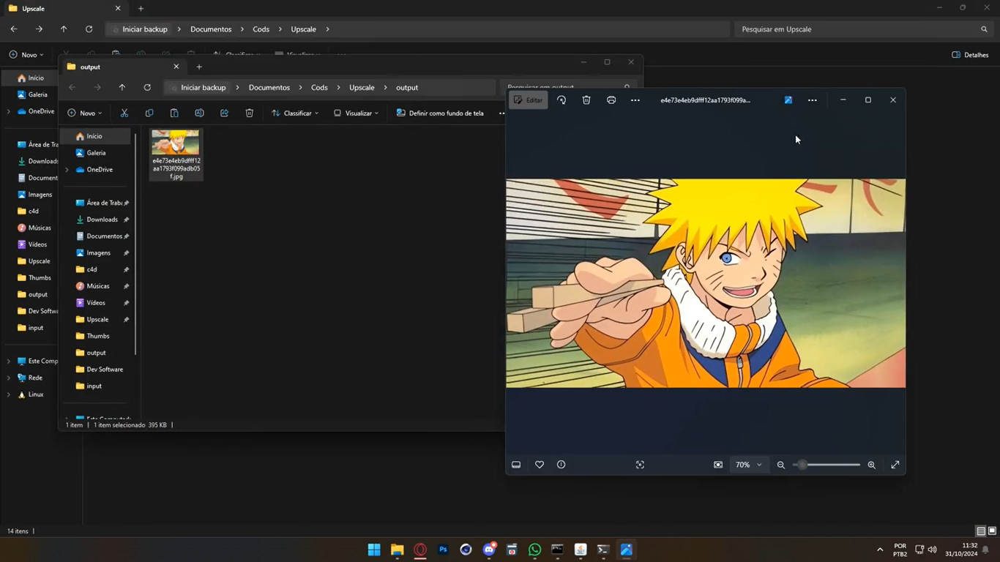
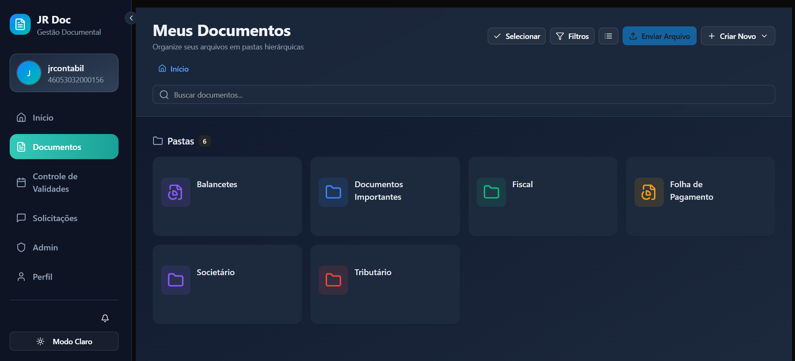
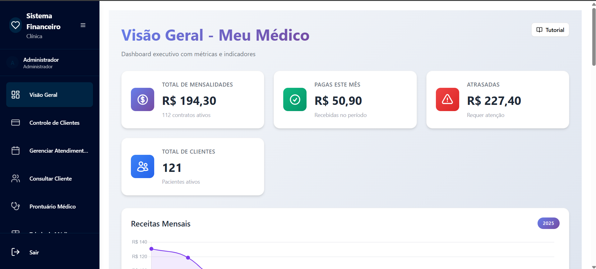

Jonathan Augusto da Silva
Finanças
Profissional com experiência prática em rotinas financeiras, contábeis, departamento pessoal e controladoria. Especialista em transformar fluxos manuais em operações automatizadas utilizando Excel Avançado, Power BI, Power Query e Python para otimização, compliance e suporte à tomada de decisão.
Sobre
Sou graduando em Ciências Contábeis pela Faculdade Uninter, com atuação focada na intersecção entre gestão financeira, conformidade contábil/trabalhista e tecnologia. Minha visão estratégica é voltada para eficiência operacional, redução de custos e eliminação de gargalos manuais dentro de escritórios e empresas.
Finanças, Contabilidade & Automação de Processos
Atuação na intersecção entre rotinas financeiras, contábeis e de departamento pessoal, com automação e análise de dados para ganhar eficiência, compliance e apoio à decisão.
- Formação: Ciências Contábeis (Uninter)
- LinkedIn: linkedin.com/in/augustojdev
- Local: Maceió, AL
- Email: augusto.jonathan02@gmail.com
- Área: Finanças / Contábil / DP
- Inglês: Avançado
- Disponibilidade: Estágio, CLT e CNPJ
Projetos em destaque de negócios e finanças
Certificações finanças e dados
Idiomas PT-BR e EN (avançado)
Competências entre áreas e ferramentas
Competências
Competências técnicas em finanças, dados, automação e sistemas contábeis.
Finanças e Controladoria
Conciliação Bancária, Contabilidade Gerencial, Análise de Custos, Fechamento Contábil, Controle Financeiro, Provisões, Compliance Fiscal e Trabalhista.
Dados e Business Intelligence
Power BI, Power Query, Excel Avançado, Python (Pandas), SQL, PostgreSQL, Análise e Tratamento de Dados.
Automação de Processos
Power Automate, Scripts em Python, Integração de APIs, Automação de Relatórios e Fluxos Contábeis.
Sistemas Contábeis e Governamentais
AlterData, e-CAC, eSocial, Conectividade Social, DCTFWeb, Giss.
Currículo
Graduando em Ciências Contábeis com experiência prática em DP, contabilidade, finanças e controladoria. Atuo na automação de rotinas com Excel Avançado, Power BI, Power Query e Python.
Resumo
Jonathan Augusto da Silva
Profissional com experiência prática em rotinas financeiras, contábeis, departamento pessoal e controladoria, com foco em automação de processos e análise de dados para otimização, compliance e suporte à tomada de decisão.
- Maceió, AL
- augusto.jonathan02@gmail.com
- linkedin.com/in/augustojdev
Formação
Bacharelado em Ciências Contábeis (Cursando)
Em andamento
Faculdade Uninter
Graduação com foco em contabilidade, conformidade fiscal/trabalhista e gestão financeira.
Certificações
Finanças corporativas e dados
- JPMorgan Chase & Co. — Investment Banking Virtual Experience: modelagem financeira, análise corporativa, valuation e M&A
- Citi — Finance Virtual Experience: análise de demonstrações financeiras, FP&A e relatórios de desempenho corporativo
- Goldman Sachs — Internal Audit Virtual Experience: mapeamento de riscos, controles internos e compliance (AML)
- FGV — Introdução à Ciência de Dados: visão estratégica e de negócios do ecossistema de dados
Experiência profissional
Auxiliar Administrativo - DP e Contábil — JR Contabilidade Plus
Agosto 2025 - Outubro 2026
- Automatizei o acompanhamento de ASOs periódicos de empresas clientes, estruturando um fluxo híbrido com Power BI, Power Automate e Python para tratamento e priorização das informações, reduzindo uma rotina de 1 dia inteiro para 20-30 minutos.
- Estruturei a leitura e o tratamento massivo de arquivos OFX (usando Power Query, Excel e scripts em Python), automatizando a conciliação bancária e eliminando erros operacionais manuais.
- Otimizei o fechamento contábil e controle de provisões, integrando dados ao ERP para garantir a integridade da análise de contas e suporte à contabilidade gerencial.
- Assegurei o compliance em obrigações acessórias (DCTFWeb, eSocial, FGTS), realizando análise de riscos e garantindo a conformidade fiscal.
- Atuei como referência técnica na estruturação de fluxos de trabalho administrativos, aumentando a qualidade dos dados contábeis e a produtividade da equipe.
Auxiliar de Administração e Produção — JK Designer
Janeiro 2023 - Julho 2025
- Estruturei controles de fluxo de caixa e gestão de passivos, implementando monitoramento que elevou a acuracidade do estoque e o controle de custos.
- Desenvolvi automação de processos utilizando Excel Avançado e Power Query para análise de dados, otimizando o acompanhamento de métricas operacionais e prazos.
- Promovi maior visibilidade em tempo real do fluxo produtivo através de análise de dados, oferecendo suporte estratégico para redução de custos e otimização de recursos.
Projetos e Soluções
Soluções desenvolvidas com impacto financeiro, contábil e de negócios.

Automação de Relatórios Financeiros, Conciliação e DP
Rotinas automatizadas em Python, Power BI e Power Query para leitura de extratos (.ofx), conciliação bancária e auditoria preventiva de prazos de SST/RH, reduzindo o trabalho manual em mais de 90% e acelerando o fechamento.

Plataforma de Organização e Gestão Fiscal
Sistema interno completo para gerenciar e auditar documentos fiscais de clientes, facilitando a rotina do escritório contábil, garantindo compliance e melhorando a rastreabilidade das informações.

Sistemas de Gestão Comercial e Financeira (SaaS)
Aplicações completas para gestão de negócios (controle financeiro, fluxo de caixa, faturamento e agendamentos), estruturadas para organizar a saúde financeira de pequenas empresas.
O que eu faço
Tipos de entregas e problemas que costumo resolver nas rotinas financeiras e contábeis.
Finanças e Controladoria
Conciliação bancária, fluxo de caixa, análise de custos e fechamento contábil com suporte à contabilidade gerencial.
Departamento Pessoal
Acompanhamento de ASOs, eSocial, FGTS e demais rotinas trabalhistas com controle de prazos.
Compliance Fiscal e Trabalhista
Obrigações acessórias (DCTFWeb, eSocial, FGTS), análise de riscos e conformidade fiscal.
Automação de Processos
Fluxos com Power Automate, Power Query e scripts em Python para eliminar rotinas manuais.
Dados e Business Intelligence
Tratamento de dados, SQL/PostgreSQL e dashboards em Power BI para apoio à decisão.
Relatórios e Análises
Relatórios financeiros e gerenciais automatizados com Excel Avançado e Power BI.